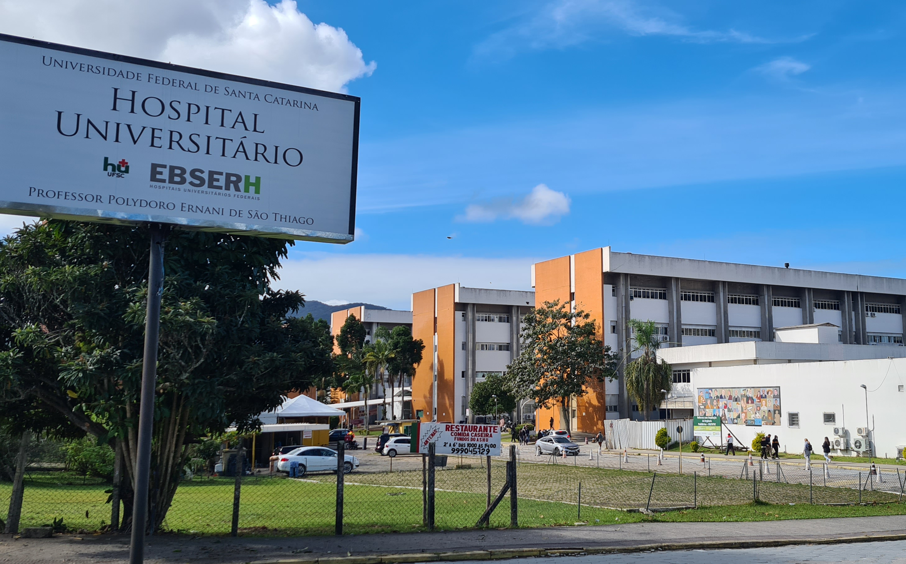

⚠️ATENÇÃO⚠️
Compromisso e Cuidado com os nossos Leitores
Nós da Papel News, temos uma missão que vai além de informar. Nós preocupamos genuinamente com o bem-estar de nossos leitores e buscamos oferecer não apenas notícias, mas também apoio e conscientização. Entendemos que cada pessoa que nos lê é parte de nossa grande família editorial.
Setembro é um mês emblemático para nós, marcado pela campanha de prevenção ao suicídio. É um período para reforçar a importância da saúde mental e do diálogo aberto sobre ansiedade e depressão. Sabemos que esses são desafios reais enfrentados por muitos e queremos estar ao seu lado, oferecendo palavras que confortam e informam.
Recomendamos que, ao sentir qualquer sintoma de ansiedade ou depressão, não hesite em buscar ajuda. Falar com alguém de confiança, seja um amigo ou familiar, pode ser o primeiro passo para encontrar suporte. Além disso, profissionais da saúde, como psicólogos, estão preparados para oferecer a assistência necessária.
Sua vida é preciosa! Queremos contribuir para que você encontre motivos para sorrir todos os dias. Por isso, nos dedicamos a criar conteúdos que informam, educam e inspiram. Estamos juntos nessa jornada, valorizando cada história e cada leitor.
Sua vida é valiosa e queremos vê-lo sorrir! 😁
Estamos aqui não apenas para trazer informações, mas para lembrar que você não está sozinho. 🙃
Astronomia🌌
A Primeira Caminhada Espacial Privada é Concluída com Sucesso pela SpaceX
Alô Elon...🤳
A SpaceX, empresa pioneira em tecnologia aeroespacial, alcançou mais um feito extraordinário ao concluir com sucesso a primeira caminhada espacial privada da história. Este evento marca um ponto de virada significativo na exploração espacial, demonstrando que o espaço está se tornando cada vez mais acessível para entidades não governamentais.
A missão Polaris Dawn, liderada pelo bilionário Jared Isaacman, foi lançada no topo do foguete Falcon 9, decolando do histórico Complexo de Lançamento 39A, no Centro Espacial Kennedy da NASA. Este local é carregado de simbolismo, sendo o mesmo de onde partiu a Apollo 11, a primeira missão a levar humanos à Lua.
Durante a missão, Isaacman e a engenheira Sarah Gillis realizaram a caminhada espacial, saindo da cápsula Crew Dragon para flutuar no espaço. Este momento foi capturado por câmeras montadas dentro e fora da cápsula, bem como nos capacetes dos astronautas, proporcionando vistas espetaculares do espaço e da Terra.
Os trajes espaciais utilizados foram desenvolvidos especificamente para esta missão, equipados com câmeras de última geração e novos tecidos de gerenciamento térmico, permitindo uma mobilidade aprimorada. Os testes realizados durante a caminhada espacial visavam avaliar o conforto e a funcionalidade dos trajes em atividades extraveiculares.
Os trajes espaciais utilizados foram desenvolvidos especificamente para esta missão, equipados com câmeras de última geração e novos tecidos de gerenciamento térmico, permitindo uma mobilidade aprimorada. Os testes realizados durante a caminhada espacial visavam avaliar o conforto e a funcionalidade dos trajes em atividades extraveiculares.
A missão Polaris Dawn pode ser considerada um passo adiante rumo a objetivos mais ambiciosos, como a exploração de Marte. Além disso, a caminhada espacial teve como objetivo principal testar os trajes que a SpaceX desenvolveu, que possuem características inovadoras para suportar as condições extremas do espaço.
Ao observar a Terra do espaço, Isaacman expressou um sentimento de admiração e responsabilidade, destacando que, apesar dos desafios enfrentados no planeta, a Terra parece um mundo perfeito quando vista de cima. Este evento não apenas representa um avanço tecnológico, mas também inspira uma reflexão sobre nosso papel como habitantes deste planeta.
A missão Polaris Dawn e sua bem-sucedida caminhada espacial privada são um testemunho do progresso humano e da incessante busca pelo desconhecido. Com este marco, a SpaceX solidifica seu lugar na história da exploração espacial e abre novas possibilidades para o futuro da humanidade nas estrelas.
Tecnologia👨💻
Netflix Anuncia Fim de Suporte para Dispositivos Apple Antigos
A Netflix, gigante do streaming de vídeo, anunciou recentemente uma decisão que afetará diretamente os usuários de dispositivos Apple mais antigos. A empresa confirmou que encerrará o suporte para aparelhos que operam com o sistema iOS 16, incluindo modelos populares como os iPhones 8 e X. Esta medida indica uma mudança significativa no acesso ao serviço de streaming, que tem sido uma parte integrante da vida digital de muitos.
A descoberta foi feita após análises de linhas de código no aplicativo da Netflix, sugerindo que a atualização que excluirá os dispositivos mais antigos da lista de compatibilidade está iminente. Os usuários desses modelos, que incluem o iPhone 8, iPhone 8 Plus e iPhone X, bem como o iPad Pro de primeira geração e o iPad de segunda geração, não poderão mais receber atualizações futuras do aplicativo da Netflix. Isso significa que, embora ainda possam acessar o serviço, eles ficarão sem os novos recursos e melhorias que acompanham as atualizações regulares do aplicativo.
A decisão da Netflix surge em um momento oportuno, com a Apple se preparando para lançar o iOS 18. A prática de descontinuar o suporte para versões mais antigas de software não é incomum na indústria de tecnologia, pois as empresas frequentemente buscam otimizar seus serviços para os sistemas operacionais mais recentes. No entanto, isso levanta questões sobre obsolescência programada e a pressão sobre os consumidores para atualizarem seus dispositivos com mais frequência do que talvez seja necessário.
Para os usuários afetados, a alternativa seria usar o navegador para acessar a Netflix, embora isso signifique perder a capacidade de baixar conteúdo para visualização offline. A medida também pode forçar os consumidores a considerar a compra de novos dispositivos compatíveis com as versões mais recentes do iOS para manter a funcionalidade completa do aplicativo de streaming.
Este anúncio da Netflix destaca a natureza em constante evolução da tecnologia e o impacto que as decisões corporativas podem ter sobre a experiência do usuário. À medida que avançamos para um futuro cada vez mais digital, a compatibilidade de software e hardware continuará sendo um tópico crucial para discussão entre consumidores e empresas de tecnologia.
Ciência🧪
HU-UFSC Implementa Novo Protocolo no Dia Mundial da Sepse
No Dia Mundial da Sepse, o Hospital Universitário da Universidade Federal de Santa Catarina (HU-UFSC) destaca a adoção de um novo protocolo para o diagnóstico precoce e tratamento da sepse, uma condição que pode ser fatal se não tratada rapidamente. Este protocolo é um passo significativo na batalha contra uma das principais causas de morte em unidades de terapia intensiva (UTI) em todo o mundo.
A sepse, comumente mal-entendida e subdiagnosticada, é uma resposta do corpo a uma infecção que danifica os próprios tecidos e órgãos. Pode levar a choque séptico, falência múltipla de órgãos e, eventualmente, morte se não for reconhecida e gerenciada em tempo hábil. No Brasil, a sepse é responsável por um número alarmante de mortes, com cerca de 400 mil casos em adultos anualmente, dos quais 60% resultam em fatalidades.
O novo protocolo do HU-UFSC visa melhorar a identificação de sinais de sepse já na triagem, acelerando o processo de tratamento. Medidas fundamentais, como a coleta de exames laboratoriais, administração de antimicrobianos e ressuscitação volêmica, devem ser realizadas dentro de uma hora após a suspeita de sepse. Esta "hora de ouro" é crucial, pois a cada hora sem tratamento adequado, a taxa de mortalidade aumenta significativamente.
A implementação deste protocolo é uma resposta à falta de conhecimento generalizado sobre a sepse entre a população. Uma pesquisa realizada pelo Datafolha e pelo Instituto Latino-Americano de Sepse revelou que apenas 14% dos brasileiros estão cientes desta condição, uma estatística preocupante considerando a gravidade da doença.
O HU-UFSC, parte da Rede Ebserh desde março de 2016, está comprometido com a melhoria contínua do atendimento ao paciente e a gestão de excelência. A adoção deste protocolo é um exemplo de seu compromisso em salvar vidas e reduzir a taxa de mortalidade por sepse, com a esperança de diminuir essa taxa para menos de 10%.
O Dia Mundial da Sepse serve como um lembrete vital da importância do reconhecimento precoce e do tratamento imediato da sepse. Com hospitais como o HU-UFSC liderando o caminho com iniciativas como esta, há esperança de um futuro onde a sepse seja rapidamente identificada e tratada, salvando inúmeras vidas no processo.
Política🗳
Câmara conclui votação da desoneração da folha de pagamento
A Câmara dos Deputados do Brasil concluiu recentemente a votação de um projeto de lei que marca o início do fim da desoneração da folha de pagamento para 17 setores da economia. Este movimento legislativo representa uma mudança significativa na política fiscal do país, com implicações profundas para empresas e trabalhadores.
O projeto de lei, identificado como PL 1847/24, propõe uma transição de três anos para a reoneração gradual da folha de pagamentos. A desoneração, que permitia às empresas beneficiadas optar por uma contribuição social sobre a receita bruta com alíquotas reduzidas, em vez de uma taxa de 20% sobre a folha de salários, será substituída por um aumento progressivo da contribuição até alcançar a alíquota cheia do INSS.
A medida surge como resposta à decisão do Supremo Tribunal Federal (STF), que considerou inconstitucional a Lei 14.784/23. Esta lei prorrogava a desoneração até 2027, mas foi contestada por não indicar as fontes de financiamento necessárias para compensar a perda de arrecadação. O novo projeto busca remediar essa questão, estabelecendo um cronograma para a reintrodução das alíquotas completas e identificando medidas para gerar recursos que suportem as isenções durante o período de transição.
Entre as estratégias para financiar a transição, o projeto inclui a atualização do valor de imóveis para a cobrança de imposto sobre ganho de capital, a utilização de depósitos judiciais e a repatriação de valores não declarados levados ao exterior. Além disso, o projeto prevê que, durante o período de transição, as alíquotas incidentes sobre a folha de salários não afetarão os pagamentos do 13º salário.
Os setores afetados pela desoneração incluem áreas intensivas em mão de obra, como tecnologia da informação (TI) e comunicação (TIC), call centers e outros serviços. A política de desoneração foi inicialmente instituída em 2011 e ampliada em 2014, mas sofreu reduções a partir de 2018 devido à preocupação com a renúncia fiscal.
A aprovação do PL 1847/24 pela Câmara dos Deputados é um passo significativo na reforma fiscal do Brasil, refletindo a necessidade de equilibrar incentivos econômicos com responsabilidade fiscal. O texto agora segue para sanção presidencial, e sua implementação será acompanhada de perto por todos os setores envolvidos, que terão de se adaptar à nova realidade tributária do país.
⚠️ATENÇÃO⚠️
Compromisso e Cuidado com os nossos Leitores
Nós da Papel News, temos uma missão que vai além de informar. Nós preocupamos genuinamente com o bem-estar de nossos leitores e buscamos oferecer não apenas notícias, mas também apoio e conscientização. Entendemos que cada pessoa que nos lê é parte de nossa grande família editorial.
Setembro é um mês emblemático para nós, marcado pela campanha de prevenção ao suicídio. É um período para reforçar a importância da saúde mental e do diálogo aberto sobre ansiedade e depressão. Sabemos que esses são desafios reais enfrentados por muitos e queremos estar ao seu lado, oferecendo palavras que confortam e informam.
Recomendamos que, ao sentir qualquer sintoma de ansiedade ou depressão, não hesite em buscar ajuda. Falar com alguém de confiança, seja um amigo ou familiar, pode ser o primeiro passo para encontrar suporte. Além disso, profissionais da saúde, como psicólogos, estão preparados para oferecer a assistência necessária.
Sua vida é preciosa! Queremos contribuir para que você encontre motivos para sorrir todos os dias. Por isso, nos dedicamos a criar conteúdos que informam, educam e inspiram. Estamos juntos nessa jornada, valorizando cada história e cada leitor.
Sua vida é valiosa e queremos vê-lo sorrir! 😁
Estamos aqui não apenas para trazer informações, mas para lembrar que você não está sozinho. 🙃